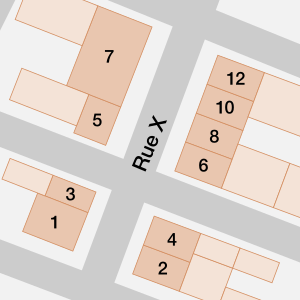
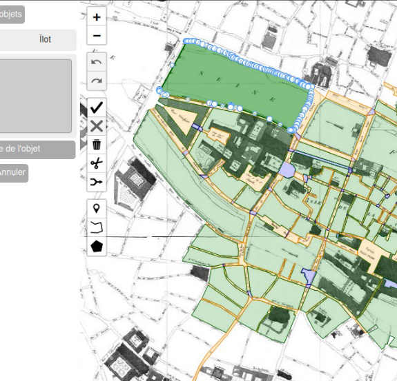
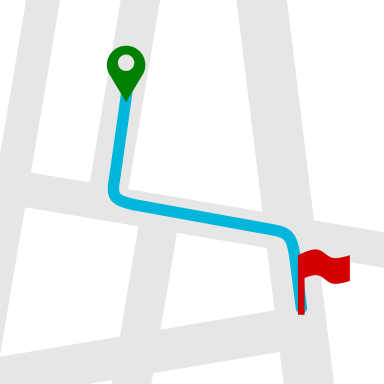
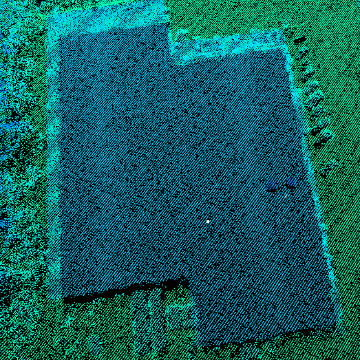

Charly Bernard
PhD student in Computer Science: Sciences and Technologies of Geographic Information
Member of the STRUDEL research team
My PhD thesis aims at building a geo-historical dataset of addresses and thoroughfares from multiple sources which are heterogeneous (old maps, directories, archive document, web data such as Wikidata...). As this diversity implies a fragmentary and accumulative integration of data, it involves some challenges such as data structuring (how to model addresses, geographical entities and their temporal evolution ?), data matching and source conflicts. The application case is about Paris from the end of the XVIIIth to the middle of the XXth century.
Doctorant en Informatique : Sciences et Technologies de l'Information Géographique
Membre de l'équipe STRUDEL
La thèse de doctorat sur laquelle je travaille consiste à construire un jeu de données géo-historiques d'adresses et de voies de communication à partir de sources multiples et hétérogènes (cartes anciennes, annuaires, documents d'archives, données web comme Wikidata...). Cette diversité implique une intégration fragmentaire et cumulative des données, ce qui pose des défis tels que la structuration des données (comment modéliser les adresses, les entités géographiques et leur évolution temporelle ?), l'appariement des données et la gestion des conflits entre sources. Le cas d'application concerne la ville de Paris de la fin du XVIIIe au milieu du XXe siècle.
Experience
Expérience
-

January 2023 - Current
PhD student - LASTIG, Université Gustave Eiffel, IGN/ENSG
Janvier 2023 -
Doctorant - LASTIG, Université Gustave Eiffel, IGN/ENSG
From multiple and highly heterogeneous sources to an open geo-historical address repository
De sources multiples fortement hétérogènes à un référentiel géo-historique d'adresses ouvert
-

October 2019 - December 2022
Survey Engineer - LASTIG, Université Gustave Eiffel, IGN/ENSG
Octobre 2019 - Décembre 2022
Ingénieur d'étude - LASTIG, Université Gustave Eiffel, IGN/ENSG
Developped a web collaborative tool to validate and edit geospatial data.
Développement d'un outil web collaboratif pour l'édition et la validation de données géographiques.
-

April - September 2019
Intern - Direction of Research and Innovation at SNCF
Avril - Septembre 2019
Stage de fin d'étude - Innovation & recherche SNCF
Production of road maps including benchmarks. Development of a tool to automate the production of roadmaps incorporating landmarks to enable passengers to find their destination around or within SNCF stations thanks to interactive maps displaying an itinerary between a point of origin and a point of destination, enriched by salient descriptions of the environment.
Travail sur la production des feuilles de routes intégrant des repères. Développement d'un outil d'automatisation de la production de cartes routières intégrant des points de repère pour permettre aux voyageurs de trouver leur destination autour ou à l'intérieur des gares SNCF grâce à des cartes interactives affichant un itinéraire entre un point d'origine et un point de destination, enrichi par des descriptions saillantes de l'environnement.
-

May - August 2018
Intern - School of Engineering, Newcastle University
Mai - août 2018
Stage - School of Engineering, Université de Newcastle
Work about application and validation of technologies for Photogrammetry. 3D digital reconstruction of objects for the Discovery Museum for the Great Exhibition of the North and preliminary study about the potential of single photon airborne laser scanning technology. Presented this study at a EuroSDR workshop in March 2019
Travail sur l'application et la validation des technologies autour la photogrammétrie. Reconstitution numérique 3D d'objets pour le Discovery Museum à l'occasion de la Great Exhibition of the North et étude préliminaire d'une technologie Single-Photon Lidar. Présentation de cette étude lors d'un workshop d'EuroSDR en mars 2019
Education
Formation
Université Gustave Eiffel
École Nationale des Sciences Géographiques (ENSG)
ENSG / Université Paris 1 / Université Paris 7
Publications
Projects
Projets
SoDuCo
Étude de l'évolution des structures spatiales urbaines en relation avec les pratiques sociales et professionnelles de la population: application à l'évolution de Paris de 1789 à 1950.
Study of the evolution of urban spatial structures with respect to the social and professional practices of the population: application to the evolution of Paris from 1789 to 1950.